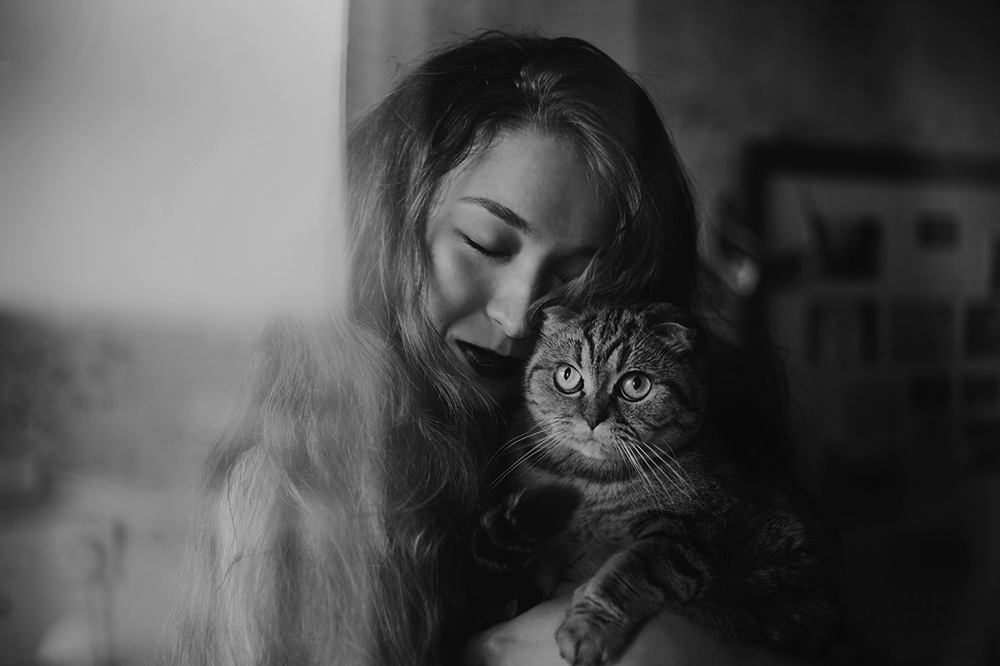

Gallery



×

Welcome to Jamie Lee Photography. Explore my portfolio and discover the artistry behind each shot.
Jamie Lee is a freelance photographer with a passion for capturing portraits and nature's beauty. With years of experience, Jamie brings a personalized touch to every photo session.
If you're interested in working with me, feel free to reach out using the form below or send an email directly.
This is the contact section where you can get in touch with Jamie Lee via the form or email provided.